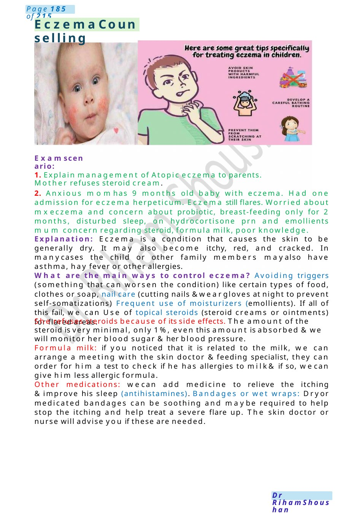
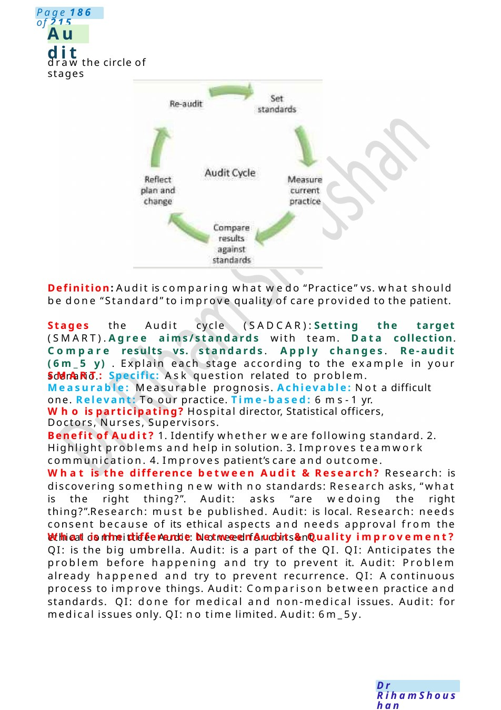

Eczema Counselling
1. Explain management of Atopic eczema to parents. Mother refuses steroid cream. 2. Anxious momhas 9 months old baby with eczema. Had one admission for eczema herpeticum. Eczema still flares. Worried about mxeczema and concern about probiotic, breast-feeding only for 2 months, disturbed sleep, on hydrocortisone prn and emollients mum concern regarding steroid, formula milk, poor knowledge.
Scenario Summary
1. Explain management of Atopic eczema to parents. Mother refuses steroid cream. 2. Anxious momhas 9 months old baby with eczema. Had one admission for eczema herpeticum. Eczema still flares. Worried about mxeczema and concern about probiotic, breast-feeding only for 2 months, disturbed sleep, on hydrocortisone prn and emollients mum concern regarding steroid, formula milk, poor knowledge.
Full Original Scenario

Eczema Counselling
Examscenario:
1. Explain management of Atopic eczema to parents. Mother refuses steroid cream.
2. Anxious momhas 9 months old baby with eczema. Had one admission for eczema herpeticum. Eczema still flares. Worried about mxeczema and concern about probiotic, breast-feeding only for 2 months, disturbed sleep, on hydrocortisone prn and emollients mum concern regarding steroid, formula milk, poor knowledge.
Explanation: Eczema is a condition that causes the skin to be generally dry. It may also become itchy, red, and cracked. In manycases the child or other family members mayalso have asthma, hay fever or other allergies.
What are the main ways to control eczema? Avoiding triggers (something that can worsen the condition) like certain types of food, clothes or soap, nail care (cutting nails &weargloves at night to prevent self-somatizations) Frequent use of moisturizers (emollients). If all of this fail, we can Use of topical steroids (steroid creams or ointments) for flared areas.
She refuses steroids because of its side effects. The amount of the steroid is very minimal, only 1%, even this amount is absorbed &we will monitor her blood sugar &her blood pressure.
Formula milk: if you noticed that it is related to the milk, we can arrange a meeting with the skin doctor &feeding specialist, they can order for him a test to check if he has allergies to milk& if so, wecan give him less allergic formula.
Other medications: wecan add medicine to relieve the itching &improve his sleep (antihistamines). Bandages or wet wraps: Dryor medicated bandages can be soothing and maybe required to help stop the itching and help treat a severe flare up. The skin doctor or nurse will advise you if these are needed.

Audit
draw the circle of stages
Definition: Audit is comparing what wedo “Practice” vs. what should be done “Standard” to improve quality of care provided to the patient.
Stages the Audit cycle (SADCAR):Setting the target (SMART).Agree aims/standards with team. Data collection. Compare results vs. standards. Apply changes. Re-audit (6m_5 y) . Explain each stage according to the example in your scenario.
SMART: Specific: Ask question related to problem. Measurable: Measurable prognosis. Achievable: Not a difficult one. Relevant: To our practice. Time-based: 6 ms- 1 yr.
Who is participating? Hospital director, Statistical officers, Doctors, Nurses, Supervisors.
Benefit of Audit? 1. Identify whether we are following standard. 2. Highlight problems and help in solution. 3. Improves teamwork communication. 4. Improves patient’s care and outcome.
What is the difference between Audit &Research? Research: is discovering something new with no standards: Research asks, “what is the right thing?”. Audit: asks “are wedoing the right thing?”.Research: must be published. Audit: is local. Research: needs consent because of its ethical aspects and needs approval from the ethical committee. Audit: Noneed for consent.
What is the difference between Audit &Quality improvement? QI: is the big umbrella. Audit: is a part of the QI. QI: Anticipates the problem before happening and try to prevent it. Audit: Problem already happened and try to prevent recurrence. QI: Acontinuous process to improve things. Audit: Comparison between practice and standards. QI: done for medical and non-medical issues. Audit: for medical issues only. QI: no time limited. Audit: 6m_5y.